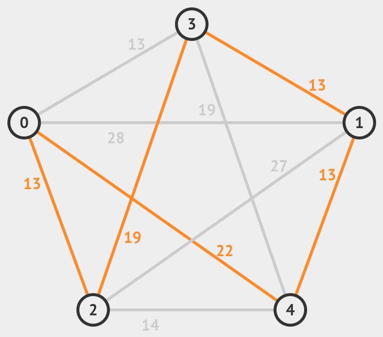
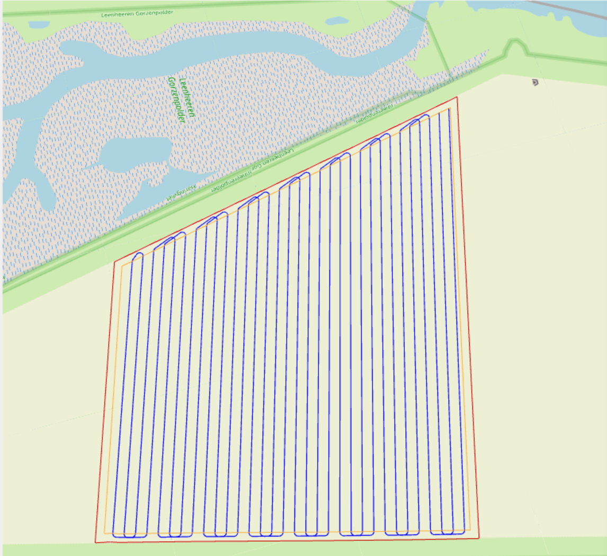
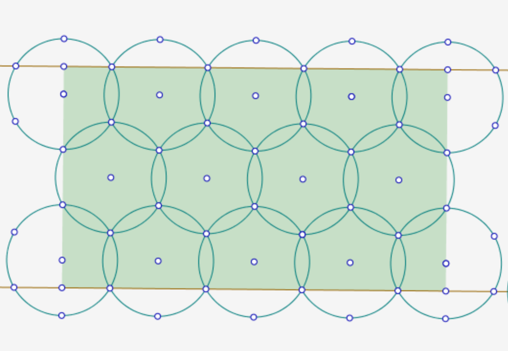

Genetic Algorithms
January 15 2024
Algorithms that can evolve, they mimic the process of natural selection and come under the field of evolutionary computation, we consider an initial population of solutions which after multiple iterations become more and more evolved ("more optimal").
One of the places it has been applied is in the travelling salesman problem (TSP).
"Given a list of cities and the distances between each pair of cities, what is the shortest possible route that visits each city exactly once and returns to the origin city? "

This is a NP-Hard problem which would mean that solutions that gurantee optimality can be expensive in terms of computation, one of such classical algorithms is the Held-Karp Algorithm, it uses dynamic programming to store the minimum cost of the travelling through a set of vertices given the starting and ending points, this ends up having a time complexity of \(O(n^2 \cdot 2^n)\) and a space complexity of \(O(n \cdot 2^n)\), which won't scale for large input sizes very well.
Genetic algorithms are a much more interesting approach, you consider an initial population of paths, now these paths are evaluated using a fitness function, once this is done the algorithm chooses paths with the highest fitness and allows them to crossover, choosing a good crossover algorithm is essential because we need to ensure that the crossover of two highly fit solutions is also highly fit, as we keep iterating we end up with more and more optimal solutions.
Coverage Path Planning
In TSP, we try to find an optimal tour for set of discrete points similarly the coverage path planning problem involves scanning an entire an area in the most optimal way, one of the most naive approaches is to simply follow a lawnmower pattern, it may not be the most optimal as it has a lot of turns and is hard to implement for irregularly shaped areas.
Another approach to solving this issue is by fitting as many circles as you can in the given area, this can be done using hexagonal packing, place the rectangle in a pattern of hexagonally placed circles, and find the minimum number of circles required, each of these circles represent the range of the UAV's deployed network.

Once this is done we can simply apply the Genetic Algorithm approach of the TSP on the the centres of the circles within the area as the waypoints.